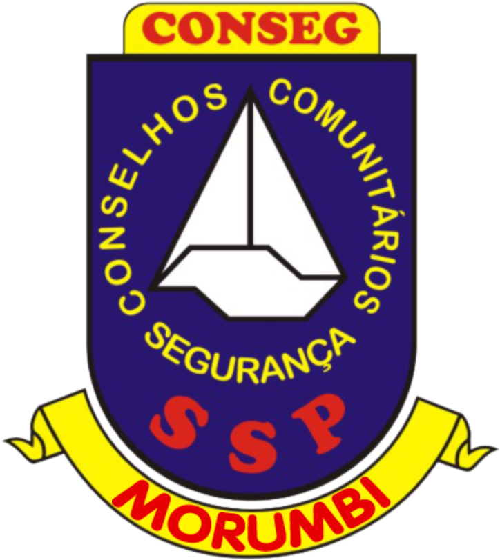

CONSEG Morumbi
Aproximando o cidadão do poder público
Reunião toda primeira terça-feira do mês, próxima em 4 de fevereiro de 2020. Sempre das 19h30 as 21h30.
Aproximando o cidadão do poder público
Reunião toda primeira terça-feira do mês, próxima em 4 de fevereiro de 2020. Sempre das 19h30 as 21h30.
Lei a Nota Oficial do CONSEG Morumbi relativo ao evento que resultou na morte de 9 pessoas em paraisópolis.
Conheça o Programa Vígia Legal. O CONSEG Morumbi dará palestra de segurança aos vigias em 19 de fevereiro de 2020. Se informe
Proporcionar a melhoria da segurança através do planejamento de ações comunitárias e projetos
preventivos
Trabalhar junto à população, à polícia e ao governo para combater as causas que gerem a
criminalidade e a violência em geral
Cada Conselho é uma entidade de apoio à Polícia Estadual e ligado ao Distrito e a Cia. da Polícia Militar correspondente a sua área de atuação. O CONSEG MORUMBI atuá na área do 34º Distrito Policial/V.Sônia-Morumbi e da 2ª Cia./16º Batalhão da Polícia Militar. Foi criado em 16 de setembro de 1993.
Somente na capital do estado, São Paulo.
Distribuidos nos 522 múnicipios do estado de São Paulo
Mais de 2.000 pessoas voluntárias nos CONSEGs do estado de São Paulo
O CONSEG Morumbi através dos Núclos de Ação Local (NAL) implantam nos bairros o Programa de Vizinhança Solidária.
O programa consiste nos moradores do bairro, unidados, atuarem em conjunto com ações primárias e preventivas a fim de melhorarem a segurança da região.
Entre em contato para saber mais informações.